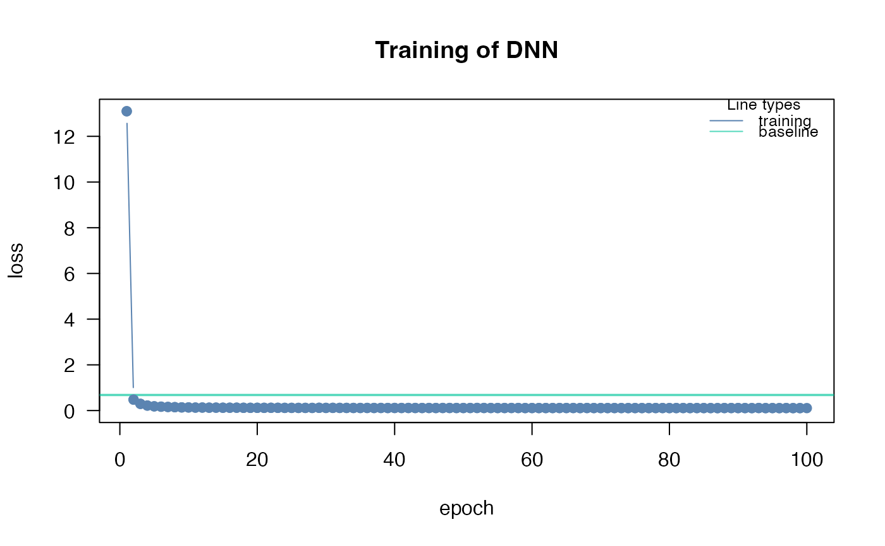

Usage
config_optimizer(
type = c("adam", "adadelta", "adagrad", "rmsprop", "rprop", "sgd"),
verbose = FALSE,
...
)Arguments
- type
character string defining which optimizer should be used. See Details.
- verbose
If TRUE, additional information about scheduler will be printed to console
- ...
additional arguments to be passed to optimizer. See Details.
Value
object of class cito_optim to give to dnn
Details
different optimizer need different variables, this function will tell you how the variables are set. For more information see the corresponding functions:
adam:
optim_adamadadelta:
optim_adadeltaadagrad:
optim_adagradrmsprop:
optim_rmsproprprop:
optim_rpropsgd:
optim_sgd
Examples
# \donttest{
if(torch::torch_is_installed()){
library(cito)
# create optimizer object
opt <- config_optimizer(type = "adagrad",
lr_decay = 1e-04,
weight_decay = 0.1,
verbose = TRUE)
# Build and train Network
nn.fit<- dnn(Sepal.Length~., data = datasets::iris, optimizer = opt)
}
#> set adagrad optimizer with following values
#> lr_decay: [1e-04]
#> weight_decay: [0.1]
#> initial_accumulator_value: [0]
#> eps: [1e-10]
#> Loss at epoch 1: 19.214115, lr: 0.01000

#> Loss at epoch 2: 3.139515, lr: 0.01000
#> Loss at epoch 3: 1.223403, lr: 0.01000
#> Loss at epoch 4: 0.802568, lr: 0.01000
#> Loss at epoch 5: 0.528364, lr: 0.01000
#> Loss at epoch 6: 0.392021, lr: 0.01000
#> Loss at epoch 7: 0.302202, lr: 0.01000
#> Loss at epoch 8: 0.234914, lr: 0.01000
#> Loss at epoch 9: 0.200520, lr: 0.01000
#> Loss at epoch 10: 0.167988, lr: 0.01000
#> Loss at epoch 11: 0.156182, lr: 0.01000
#> Loss at epoch 12: 0.148899, lr: 0.01000
#> Loss at epoch 13: 0.138670, lr: 0.01000
#> Loss at epoch 14: 0.132995, lr: 0.01000
#> Loss at epoch 15: 0.129700, lr: 0.01000
#> Loss at epoch 16: 0.129035, lr: 0.01000
#> Loss at epoch 17: 0.128869, lr: 0.01000
#> Loss at epoch 18: 0.131075, lr: 0.01000
#> Loss at epoch 19: 0.126171, lr: 0.01000
#> Loss at epoch 20: 0.124670, lr: 0.01000
#> Loss at epoch 21: 0.123072, lr: 0.01000
#> Loss at epoch 22: 0.120551, lr: 0.01000
#> Loss at epoch 23: 0.123055, lr: 0.01000
#> Loss at epoch 24: 0.124036, lr: 0.01000
#> Loss at epoch 25: 0.120461, lr: 0.01000
#> Loss at epoch 26: 0.120939, lr: 0.01000
#> Loss at epoch 27: 0.118385, lr: 0.01000
#> Loss at epoch 28: 0.120230, lr: 0.01000
#> Loss at epoch 29: 0.117492, lr: 0.01000
#> Loss at epoch 30: 0.120722, lr: 0.01000
#> Loss at epoch 31: 0.121510, lr: 0.01000
#> Loss at epoch 32: 0.118529, lr: 0.01000
#> Loss at epoch 33: 0.123933, lr: 0.01000
#> Loss at epoch 34: 0.121566, lr: 0.01000
#> Loss at epoch 35: 0.120033, lr: 0.01000
#> Loss at epoch 36: 0.118154, lr: 0.01000
#> Loss at epoch 37: 0.121839, lr: 0.01000
#> Loss at epoch 38: 0.119982, lr: 0.01000
#> Loss at epoch 39: 0.116676, lr: 0.01000
#> Loss at epoch 40: 0.116773, lr: 0.01000
#> Loss at epoch 41: 0.116147, lr: 0.01000
#> Loss at epoch 42: 0.116944, lr: 0.01000
#> Loss at epoch 43: 0.121009, lr: 0.01000
#> Loss at epoch 44: 0.121411, lr: 0.01000
#> Loss at epoch 45: 0.119584, lr: 0.01000
#> Loss at epoch 46: 0.120266, lr: 0.01000
#> Loss at epoch 47: 0.116665, lr: 0.01000
#> Loss at epoch 48: 0.119792, lr: 0.01000
#> Loss at epoch 49: 0.116632, lr: 0.01000
#> Loss at epoch 50: 0.118367, lr: 0.01000
#> Loss at epoch 51: 0.112035, lr: 0.01000
#> Loss at epoch 52: 0.118438, lr: 0.01000
#> Loss at epoch 53: 0.113888, lr: 0.01000
#> Loss at epoch 54: 0.115187, lr: 0.01000
#> Loss at epoch 55: 0.120707, lr: 0.01000
#> Loss at epoch 56: 0.117320, lr: 0.01000
#> Loss at epoch 57: 0.113696, lr: 0.01000
#> Loss at epoch 58: 0.114802, lr: 0.01000
#> Loss at epoch 59: 0.115144, lr: 0.01000
#> Loss at epoch 60: 0.117273, lr: 0.01000
#> Loss at epoch 61: 0.117863, lr: 0.01000
#> Loss at epoch 62: 0.114426, lr: 0.01000
#> Loss at epoch 63: 0.118420, lr: 0.01000
#> Loss at epoch 64: 0.115386, lr: 0.01000
#> Loss at epoch 65: 0.113183, lr: 0.01000
#> Loss at epoch 66: 0.114129, lr: 0.01000
#> Loss at epoch 67: 0.112877, lr: 0.01000
#> Loss at epoch 68: 0.113731, lr: 0.01000
#> Loss at epoch 69: 0.113340, lr: 0.01000
#> Loss at epoch 70: 0.117737, lr: 0.01000
#> Loss at epoch 71: 0.114356, lr: 0.01000
#> Loss at epoch 72: 0.117036, lr: 0.01000
#> Loss at epoch 73: 0.113444, lr: 0.01000
#> Loss at epoch 74: 0.113467, lr: 0.01000
#> Loss at epoch 75: 0.113733, lr: 0.01000
#> Loss at epoch 76: 0.113921, lr: 0.01000
#> Loss at epoch 77: 0.115116, lr: 0.01000
#> Loss at epoch 78: 0.116266, lr: 0.01000
#> Loss at epoch 79: 0.113663, lr: 0.01000
#> Loss at epoch 80: 0.115942, lr: 0.01000
#> Loss at epoch 81: 0.112632, lr: 0.01000
#> Loss at epoch 82: 0.116921, lr: 0.01000
#> Loss at epoch 83: 0.113572, lr: 0.01000
#> Loss at epoch 84: 0.114441, lr: 0.01000
#> Loss at epoch 85: 0.115372, lr: 0.01000
#> Loss at epoch 86: 0.110617, lr: 0.01000
#> Loss at epoch 87: 0.112745, lr: 0.01000
#> Loss at epoch 88: 0.118966, lr: 0.01000
#> Loss at epoch 89: 0.113777, lr: 0.01000
#> Loss at epoch 90: 0.111511, lr: 0.01000
#> Loss at epoch 91: 0.117097, lr: 0.01000
#> Loss at epoch 92: 0.114462, lr: 0.01000
#> Loss at epoch 93: 0.112198, lr: 0.01000
#> Loss at epoch 94: 0.113598, lr: 0.01000
#> Loss at epoch 95: 0.113197, lr: 0.01000
#> Loss at epoch 96: 0.111946, lr: 0.01000
#> Loss at epoch 97: 0.115448, lr: 0.01000
#> Loss at epoch 98: 0.120333, lr: 0.01000
#> Loss at epoch 99: 0.113684, lr: 0.01000
#> Loss at epoch 100: 0.113636, lr: 0.01000
# }